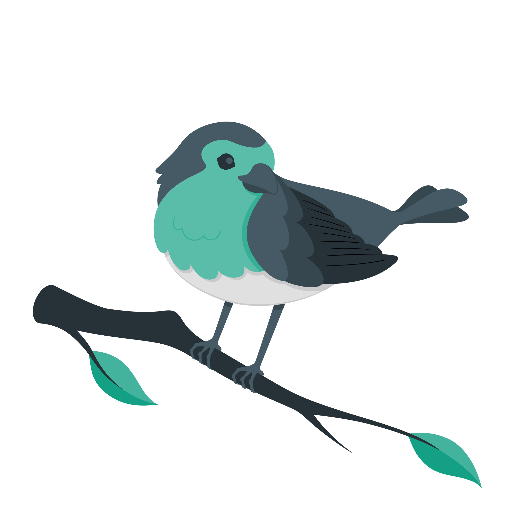

Démo dataviz en Quarto®
Quarto® est un outil open-source de création de publications scientifiques et techniques construit sur Pandoc
Quarto permet de :
- Créer du contenu dynamique avec Python, R, Julia et Observable.
- Créez des documents en texte brut markdown ou des notebooks Jupyter.
- Publier des articles, des rapports, des présentations, des sites Web, des blogs et des livres en HTML, PDF, MS Word, ePub, etc.
- Créer des documents en format markdown scientifique, y compris des équations, des citations, des références croisées, des panneaux de figures, des légendes, une mise en page avancée, etc.
